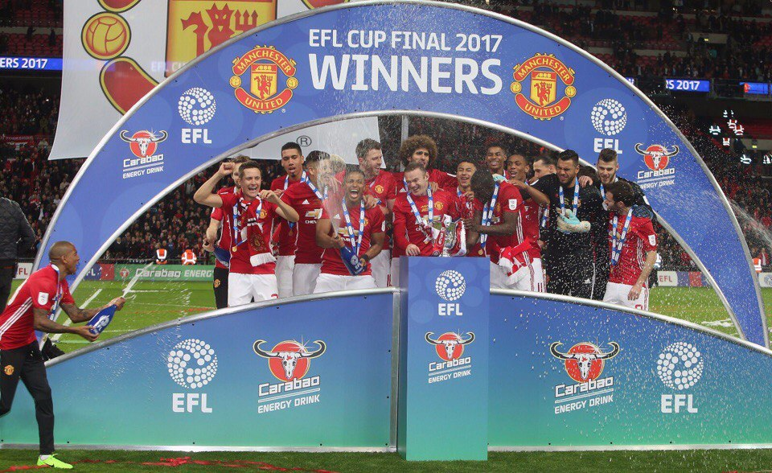

Футбольный клуб «Манче́стер Юна́йтед» — английский профессиональный футбольный клуб из Стретфорда, Большой Манчестер. Был основан в 1878 году под названием «Ньютон Хит (Ланкашир энд Йоркшир Рейлуэй)», в 1902 году изменил название на «Манчестер Юнайтед». Один из самых популярных футбольных клубов в мире. Один из клубов-основателей английской Премьер-лиги в 1992 году.
Домашний стадион «Юнайтед», «Олд Траффорд», был открыт в 1910 году. Он является крупнейшим после «Уэмбли» футбольным стадионом в Англии и вмещает около 75 тысяч зрителей.
«Манчестер Юнайтед» является одним из самых успешных английских клубов по количеству выигранных титулов за всю историю, а под руководством сэра Алекса Фергюсона — самым успешным клубом в Англии, выиграв 38 трофеев с 1986 по 2013 годы. В сезоне 2012/13 «Юнайтед» в рекордный 20-й раз выиграл чемпионский титул. В 1968 году «Манчестер Юнайтед» стал первым английским клубом, выигравшим Кубок европейских чемпионов, победив в финале португальскую «Бенфику» со счётом 4:1. В 1999 году клуб во второй раз выиграл главный европейский клубный трофей, одолев в финале мюнхенскую «Баварию» со счётом 2:1. В 2008 году «Юнайтед» вновь выиграл Лигу чемпионов, обыграв в финале лондонский «Челси».
В 2016 году «Юнайтед» входил в тройку футбольных клубов с самыми высокими доходами в мире. 20 апреля 2016 года журнал Forbes оценил клуб в 3,3 млрд долларов (2,23 млрд фунтов).
Главный тренер команды — португальский специалист Жозе Моуринью, сменивший в мае 2016 года уволенного Луи ван Гала. Капитаном команды является Майкл Каррик, сменивший ушедшего из клуба летом 2017 года Уэйна Руни.
Статистика и рекорды ФК «Манчестер Юнайтед»

Данная статья посвящена статистике и рекордам футбольного клуба «Манчестер Юнайтед». «Манчестер Юнайтед» является английским профессиональным футбольным клубом из Стретфорда, Большой Манчестер. Клуб был основан в 1878 году (под названием «Ньютон Хит»), приобрёл статус профессионального в 1885 году и вступил в Футбольную лигу Англии в 1892 году. В настоящее время «Манчестер Юнайтед» выступает в Премьер-лиге, высшем дивизионе чемпионата Англии. Клуб не покидал высший дивизион с 1975 года и никогда не опускался ниже второго дивизиона. «Юнайтед» также регулярно выступает в еврокубках с тех пор, как в 1956 году стал первым английским клубом в истории, принявшим участие в розыгрыше Кубка европейских чемпионов.
Статья содержит основную информацию о завоёванных клубом трофеях, его лучших бомбардирах и игроках с наибольшим количеством матчей, об итоговых достижениях во всех официальных соревнованиях и статистике тренерских карьер. Также приводятся списки крупнейших побед и поражений, рекордные трансферные суммы и статистика по количеству зрителей.
В настоящее время «Манчестер Юнайтед» является рекордсменом среди английских клубов по количеству побед в высшем дивизионе чемпионата Англии (20 раз). Помимо этого клуб удерживает рекорд по количеству побед в Премьер-лиге — 13 раз. Кроме этого, «Манчестер Юнайтед» выигрывал Кубок Англии 12 раз (совместный рекорд с «Арсеналом»).
«Манчестер Юнайтед» является первым и единственным в истории английским клубом, которому удавалось выиграть Межконтинентальный кубок и Клубный чемпионат мира.
Действующим рекордсменом клуба по количеству сыгранных матчей является Райан Гиггз (963 матча), а лучшим бомбардиром — Уэйн Руни (253 гола). Внимание!
Приводимая ниже официальная статистика не учитывает матчи и голы в рамках Кубка Ланкашира, Кубка Манчестера и окрестностей, Комбинации (1888—1889), Футбольного альянса (1889—1892), Первого дивизиона 1939/40[A 1], военных лиг (1915—1919, 1939—1946), Военного кубка Футбольной лиги (1940—1941), Кубка коронации (1953), Кубка Уотни (1970—1971), Англо-итальянского кубка (1973), Суперкубка ScreenSport (1985) и Трофея Столетия (1988). Терминология.
Лига — Первый дивизион Футбольной лиги, Второй дивизион Футбольной лиги, Премьер-лига.
Еврокубки — Кубок европейских чемпионов, Лига чемпионов УЕФА, Кубок ярмарок, Кубок УЕФА, Лига Европы УЕФА, Кубок обладателей кубков УЕФА.